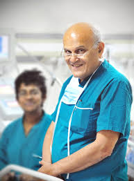
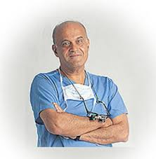

FCIH Hospital
Your Health Is Our Proiority

Sir Magdi Habib Yacoub
was born 16 November 1935
He is an Egyptian-British cardiothoracic surgeon.
He is Professor of Cardiothoracic Surgery at Imperial College London
Yacoub's achievements include:
- Establishing heart transplantation in the UK
- Establishing the'Ross Procedure'or pulmonary autograft, including a randomised control trial
- Pioneering the modern arterial switch operation
- Promoting the use of left ventricular assist devices for the'Bridge to Recovery'and establishing the largest experience in the world
- Establishing the Heart Science Centre, Magdi Yacoub Institute for research into the causes and treatment of cardiac disease
- Establishing the Chain of Hope Charity which provides Cardiothoracic Surgical care to the developing world
- Championing academic medicine, humanitarian surgery

Recent work:
Having retired from performing surgery for the National Health Service in 2001 at the age of 65,
Yacoub continues to act as a high-profile consultant and ambassador for the benefits of transplant surgery.
He continues to operate on children through his charity, Chain of Hope.
In 2006 he briefly came out of retirement to advise on a complicated procedure
which
required removing a transplant heart from a patient whose own heart had recovered.
The patient's original heart had not been removed during transplant surgery nearly a
decade earlier in the hope it might recover
In April 2007,
it was reported that a British medical research team led by Yacoub had grown part of a human heart valve,
from stem cells; a first
Honours and awards:
| Award |
Date |
Nation |
| Bradshaw Lecture |
1988 |
Royal College of Physicians |
| Texas Heart Institute Ray C |
1998 |
UK |
| Legend of Cardiovascular Medicine |
2012 |
American College of Cardiology |
| Honorary citizenships of the city of Bergamo |
2007 |
Italy |
| Medal of Merit |
2007 |
International Academy of Sciences |
| Society of Cardiology Gold Medal |
2006 |
European |
Other activities and achievements:
He is also notable for saving many lives by pioneering a technique for 'switching' the heart vessels of babies born with transposition of the great arteries, a congenital heart defect in which the two major vessels carrying blood out of the heart, the aorta and the pulmonary artery, are switched.
In 1994 he founded the charity Chain in Hope (www.chainofhope.org). This charity aims to provide children suffering from life-threatening disease with the corrective surgery and treatment to which they do not have access.
Among celebrities whose lives he extended was the comedian Eric Morecambe. He was also known to have treated the famous Egyptian actor Omar Sharif, urging the latter to give up the cigarettes that had led to his heart attack.
In 2002, he was selected to head a government recruitment drive for overseas doctors.
He has had a house named after him at The Petchey Academy which opened in September 2006.
He is one of few masters and teachers in the world of the highly technically demanding "Ross Procedure".
He established the Aswan Heart Center in April 2009.